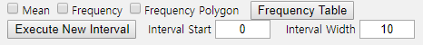

Chapter 4. Data Summary Using Tables and Measures
4.1 Frequency Table for Single Variable
[presentation] [video]
A frequency table of qualitative data summarizes frequencies of each possible value of a categorical variable. A frequency table is the most commonly used tool to summarize qualitative data. The frequency table also shows relative frequencies (percents) which are calculated by dividing the frequency of each category with the number of observations belong to the category, and cumulative relative frequencies accumulated in the order of the categories. The bar graph, the pie chart and the band graph in Chapter 2 are drawn by using this frequency table of qualitative data. The frequency table is usually used to summarize qualitative data, but it can also be used to summarize quantitative data by transforming it to qualitative data. All possible values of the quantitative data are divided into several intervals which are not overlapped with each other and the number of observations belong to each interval is counted to make a frequency table.
Frequency Table
Frequency table of qualitative data summarizes frequencies of each possible value of a categorical variable.
The frequency table can also be used to summarize quantitative data by transforming it to qualitative data. All possible values of the quantitative data are divided into several intervals which are not overlapped with each other and the number of observations belong to each interval is counted to make a frequency table.
A frequency table of sample data can be used to test the goodness of fit of data whether data follow a particular distribution as described in Chapter 11.
4.1.1 Frequency Table for Categorical Variable
Example 4.1.1
(Gender Raw Data)
In Example 2.3.1, a bar graph of the gender variable in a class was drawn by using the raw data shown in Table 4.1.1. The bar graph was able to be drawn by using the frequencies of male and female students. Use 『eStat』 to create a frequency table for this raw data of the gender variable.
Table 4.1.1 Gender raw data
| Gender |
|---|
| 1 |
| 2 |
| 1 |
| 2 |
| 1 |
| 1 |
| 1 |
| 2 |
| 1 |
| 2 |
[Ex] ⇨ eBook ⇨ EX040101_Categorical_Gender.csv.
Answer
|
Enter the gender data of Table 4.1.1 to 『eStat』 as in <Figure 4.1.1>. Use [Edit Var] button to enter the variable name ‘Gender’ and its value labels as 1 for ‘Male’ and 2 for ‘Female’ as in <Figure 4.1.2>.
The data that were edited for their value labels must be saved in JSON format to ensure that the entered information is not lost. When you load a file in JSON format, you must also use the JSON Open icon which is for opening a file in JSON format.
<Figure 4.1.1> Input gender data of a class
|


<Figure 4.1.2> Input variable name and value label
If you select the gender variable as the 'Analysis Var' in the variable selection box as shown in <Figure 4.1.1>, a bar graph of the gender is drawn as in <Figure 4.1.3>. Then, if you click the Frequency Table icon, the frequency table of the gender variable will appear in the Log Area, as in <Figure 4.1.4>. This frequency table is used to draw the bar graph or the pie chart.

<Figure 4.1.3> Bar graph of the gender

<Figure 4.1.4> Frequency table of the gender
|
Practice 4.1.1 (Vegetable Preference) Data that examined gender (1: male, 2: female) and vegetable preference(1: lettuce, 2: spinach, 3: pumpkin, 4: eggplant) of an elementary school class can be found at the following location of 『eStat』.
[Ex] ⇨ eBook ⇨ PR040101_Categorical_VegetablePrefByGender.csv.
By using 『eStat』 , find a frequency table of the vegetable preference. |
4.1.2 Frequency Table for Quantitative Variable
The quantitative data can have too many possible values and a frequency table of the quantitative data may not be easy to analyze.
In order to make a frequency table for quantitative data which can be analyzed easily, possible values of the data are divided into several intervals and frequencies of each interval are investigated. Generally, the intervals are not overlapped with each other and the number of data in each interval is counted. For this purpose, the maximum and the minimum of data are first investigated to calculate the range of the data and then determine the number of intervals. The number of intervals is typically between 5 and 10, but it may depend on a researcher’s choice. Some researchers prefer to use the square root of the number of observations. If the number of intervals is determined, the range of data (maximum - maximum) is divided by the number of intervals to calculate the width of the interval. Starting and ending points of each interval are usually described as ‘from greater than or equal (≥) \(a\)'to less than (<) \(b\) ’ which means a one-sided closed interval [\(a\) ,\(b\) ).
Example 4.1.2
(Otter length)
Data of 30 otter lengths can be found at the following location of 『eStat』.
[Ex] ⇨ eBook ⇨ EX040120_Continuous_OtterLength.csv.
Draw a histogram and frequency table of the otter lengths by using 『eStat』.
Answer
|
Retrieve the data from 『eStat』 as in <Figure 4.1.5>.
<Figure 4.1.5> Data of Otter Length
|

Click the Histogram Icon and then select the variable name 'OtterLength' to draw a histogram as shown in <Figure 4.1.6>.

<Figure 4.1.6> Histogram of the otter length
Click on the [Frequency Table] button in the options window below the histogram (<Figure 4.1.7>). Then a frequency table of the histogram intervals is shown as in <Figure 4.1.8> in the Log Area.

<Figure 4.1.7> Options of the histogram

<Figure 4.1.8> Frequency table of histogram for otter length
If you want to adjust the histogram intervals from 60kg with an interval length of 5kg, set ‘Interval Start’ to 60 and ‘Interval Width’ to 5 in the graph options. Press [Execute New Interval] button to display the adjusted histogram as shown in <Figure 4.1.9>. Click on [Frequency Table] button to reveal a new frequency table as in <Figure 4.1.10>.

<Figure 4.1.9> Adjusted histogram of otter length
<Figure 4.1.10> Adjusted frequency table of the otter length
|
Practice 4.1.2 (Age of Library Visitors) The following data is a survey on the age of 30 people who visited a library in the morning. Draw an appropriate histogram and its frequency table using 『eStat』.
28 55 26 35 43 47 47 17 35 36 48 47 34 28 43
20 30 53 27 32 34 43 18 38 29 44 67 48 45 43
[Ex] ⇨ eBook ⇨ PR040102_Continuous_LibraryVisitorAge.csv.
|